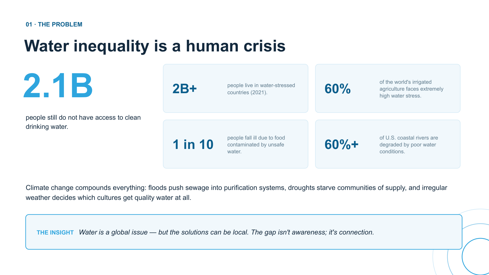
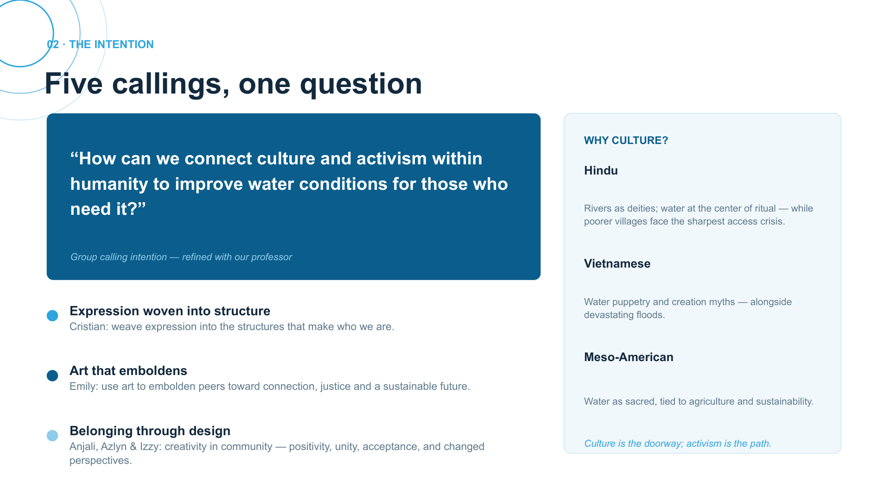
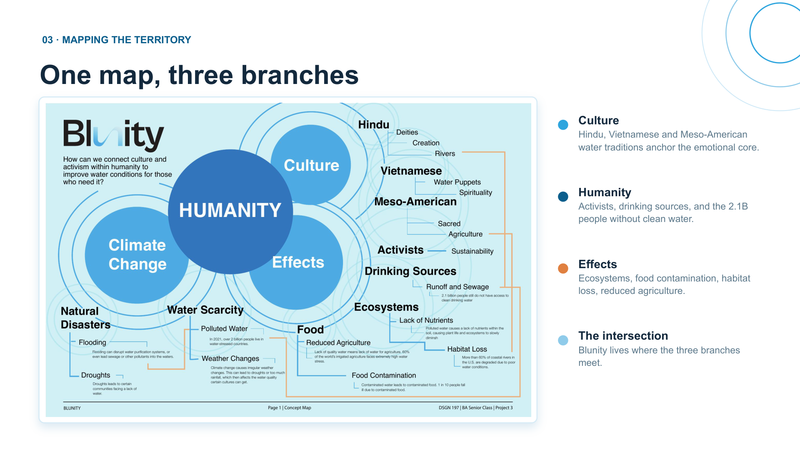
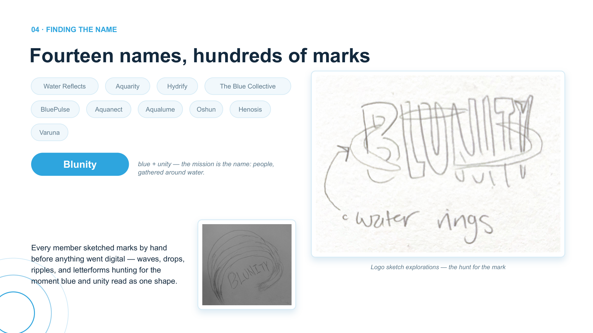
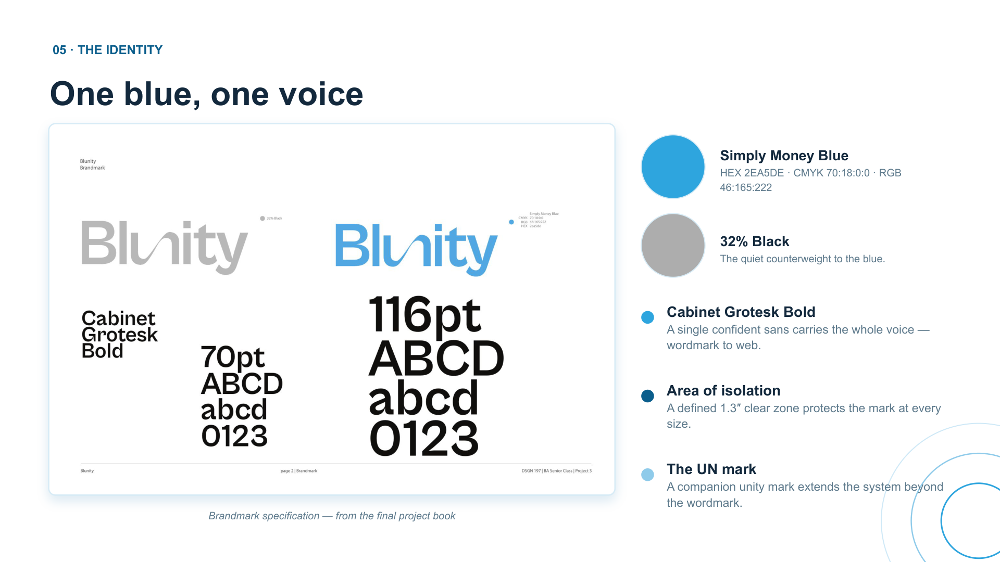
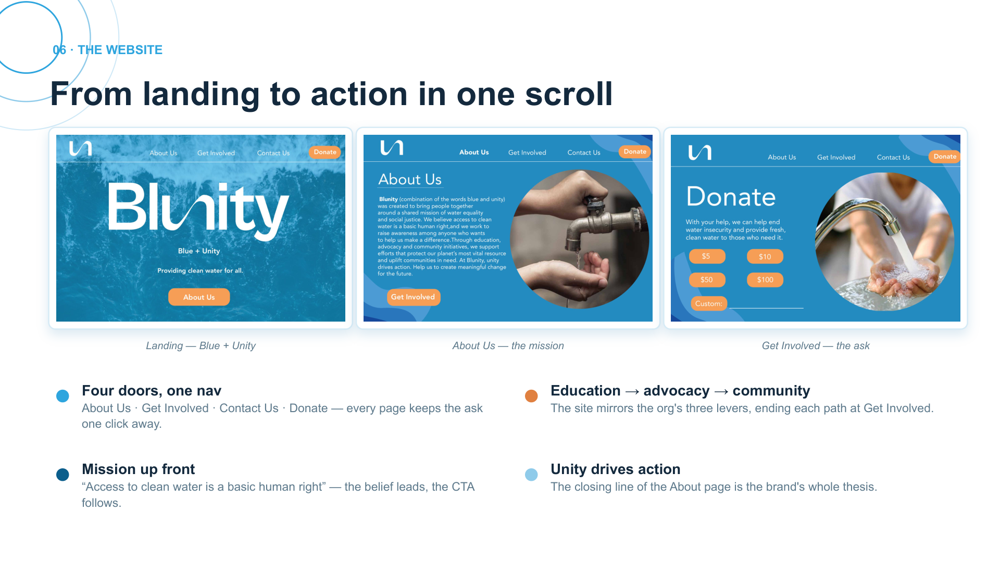
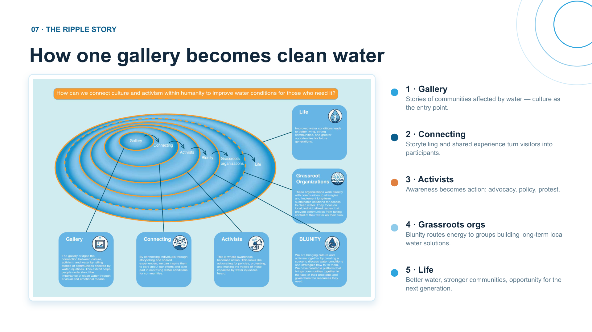
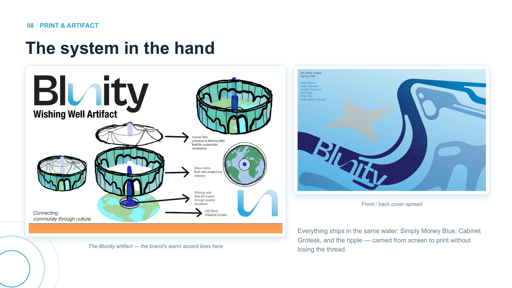

Blunity
Brand case study · DSGN 197 BA Senior Project

Brand case study · Group 3 · Fall 2024
Blue + Unity — clean water for all
How can we connect culture and activism within humanity to improve water conditions for those who need it? A senior brand project spanning identity, web, and print.
Team
Cristian · Emily · Azlyn · Anjali · Izzy
Course
DSGN 197 BA Senior Project · Section 02
Water is a global issue — but the solutions can be local. The gap isn't awareness; it's connection.
01 · The problem
Water inequality is a human crisis
2.1 billion people still do not have access to clean drinking water. Climate change compounds everything: floods push sewage into purification systems, droughts starve communities of supply, and irregular weather decides which cultures get quality water at all.

02 · The intention
Five callings, one question
Each team member brought a calling — weaving expression into structure, using art to embolden peers toward connection and justice, and building belonging through design. Culture is the doorway; activism is the path.

03 · Mapping
One map, three branches
Culture anchors the emotional core. Humanity maps activists and the 2.1B without clean water. Effects tracks ecosystems and agriculture. Blunity lives where the three branches meet.

04 · Finding the name
Fourteen names, hundreds of marks
Blunity — blue + unity — the mission is the name: people, gathered around water. Every member sketched marks by hand before anything went digital.

05 · The identity
One blue, one voice
Simply Money Blue (#2EA5DE) paired with Cabinet Grotesk Bold. A defined clear zone protects the mark at every size.

06 · The website
From landing to action in one scroll
Four doors, one nav: About Us · Get Involved · Contact Us · Donate. Mission up front — "Access to clean water is a basic human right" — the belief leads, the CTA follows.

07 · The ripple story
How one gallery becomes clean water
- Gallery — stories of communities affected by water; culture as the entry point.
- Connecting — storytelling turns visitors into participants.
- Activists — awareness becomes advocacy, policy, protest.
- Grassroots orgs — Blunity routes energy to local water solutions.
- Life — better water, stronger communities, opportunity for the next generation.

08 · Print & artifact
The system in the hand
Everything ships in the same water: Simply Money Blue, Cabinet Grotesk, and the ripple — carried from screen to print without losing the thread.

Unity drives action. Blunity was never just a logo — it's a route from a story in a gallery, through a connected community, to grassroots hands fixing water where it's broken.